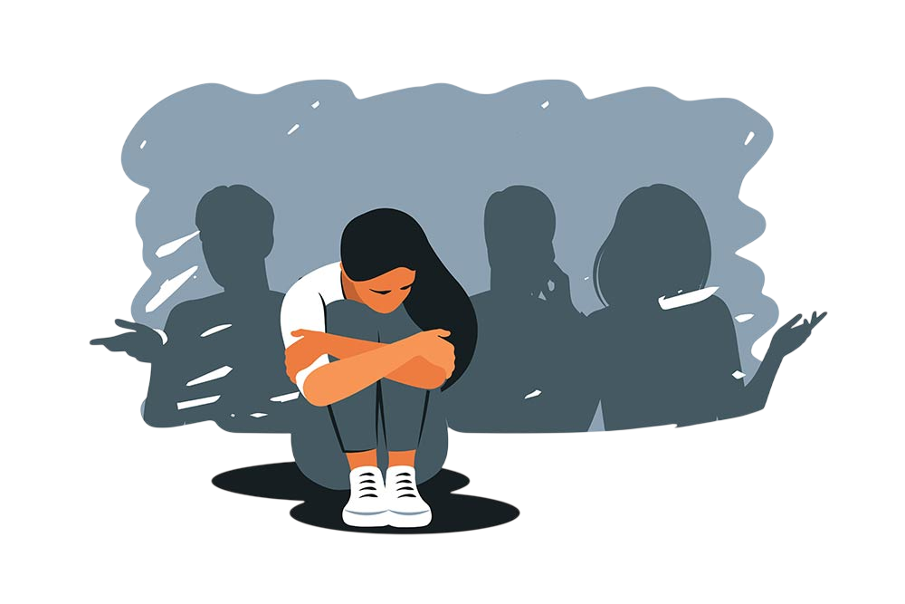
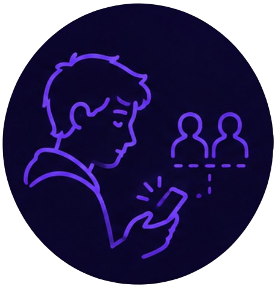
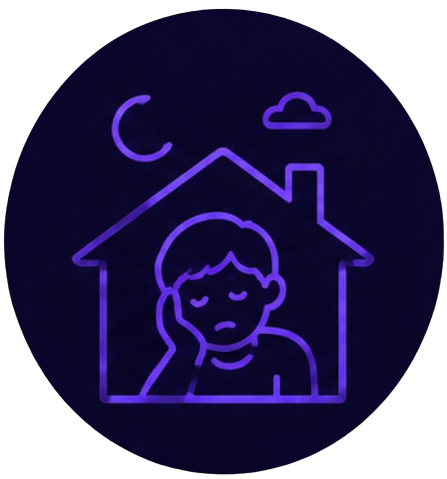
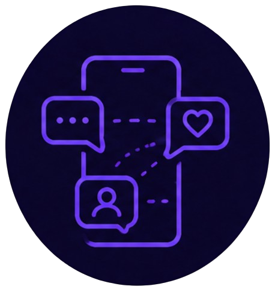
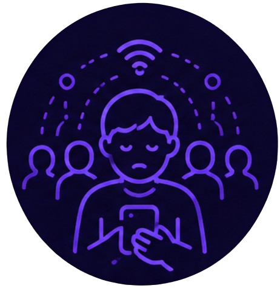

Aislamiento social
Aunque las redes sociales están diseñadas para "conectar" personas, usarlas en exceso puede tener el efecto contrario: reemplazar las interacciones reales por interacciones digitales superficiales. Pasar horas viendo la vida de otros en una pantalla es distinto a compartir tiempo real con las personas que tienes cerca.

Tip del día
Convierte una interacción digital en una real cada semana. En vez de solo comentar o mandar mensajes a un amigo, propón verse en persona o hacer una llamada de voz en lugar de escribir por chat.

Preferir la pantalla a la compañía
Cuando estás con alguien, sientes más ganas de revisar el celular que de participar en la conversación.
Dale la vueltaQué hacer
Cuando estés compartiendo con alguien, guarda el celular fuera de la mesa o en modo silencio. Esa pequeña acción cambia mucho la calidad del tiempo juntos.

Menos ganas de salir
Prefieres quedarte viendo contenido en el celular en vez de salir a actividades que antes disfrutabas.
Dale la vueltaQué hacer
Comprométete con planes pequeños y concretos, como una hora de estudio juntos o caminar con alguien, en vez de dejarlo como "algún día".

Relaciones solo digitales
Notas que la mayoría de tu contacto con amigos o familiares pasa solo por mensajes o likes, sin encuentros reales.
Dale la vueltaQué hacer
Elige a una o dos personas cercanas y propón verlas en persona con regularidad, aunque sea algo sencillo como estudiar juntos o comer algo.

Soledad a pesar de estar "conectado"
Tienes muchos contactos, pero sientes que no hay nadie con quien realmente puedas hablar.
Dale la vueltaQué hacer
La cantidad de contactos no equivale a calidad de relación. Enfócate en profundizar unas pocas amistades reales en vez de acumular conexiones superficiales.